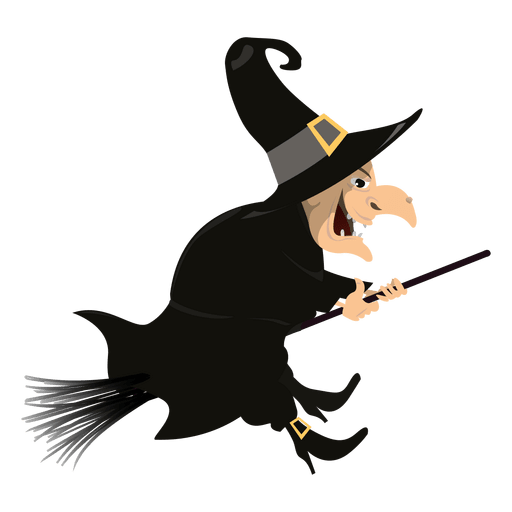

Fase 3
A Bruxa Estela tem 4 criaturas para alimentar: um elfo, um monstro, um gato e um corvo. O corvo come mais do que o elfo, o gato mais do que o elfo e menos do que o monstro, mas o monstro come mais do que o corvo. Qual dos 4 é a criatura que menos come? 1- O Gato 2- O Elfo